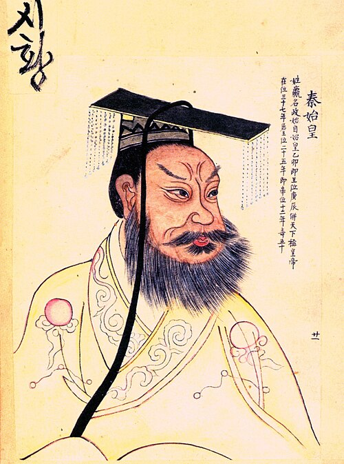
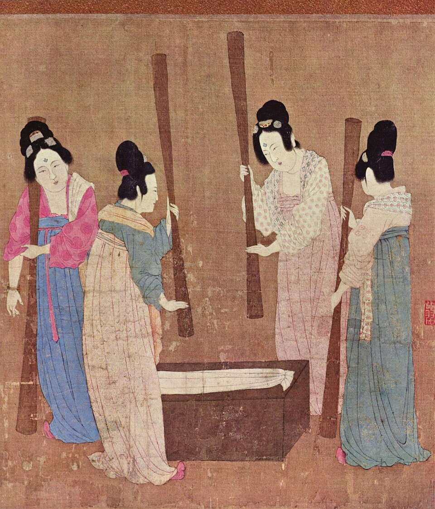
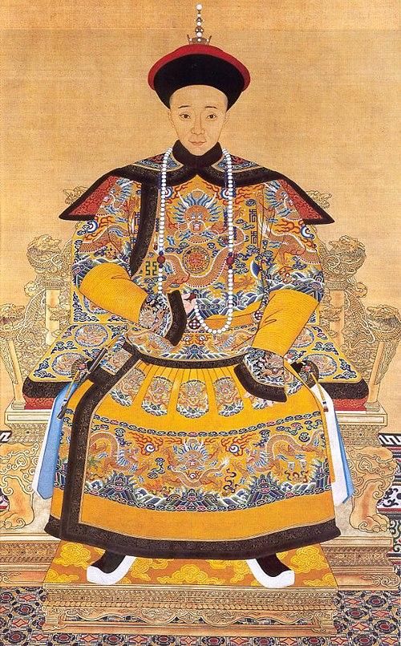
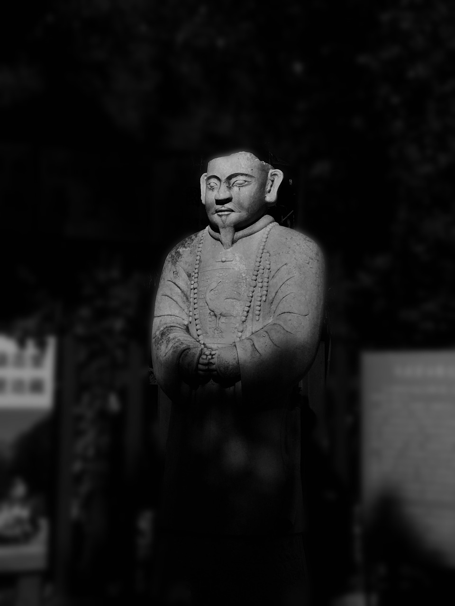

Die Politik und Herrschaft im alten China waren stark auf Einheit und Stabilität ausgerichtet. Vor der Reichsgründung existierten viele kleine Stadtstaaten, die häufig miteinander im Konflikt standen. Im Jahr 221 v. Chr. gelang es dem König der Qin-Dynastie, das Land zu vereinen. Diese Einigung galt als wichtige Grundlage für die Stärke der ersten Kaiserreiche. Zur Sicherung des Reiches ließ er große Schutzmauern errichten, die später zur Großen Mauer ausgebaut wurden.

Der Kaiser stand an der Spitze des Staates und galt als Symbol von Stärke und Ordnung. Er regierte jedoch nicht allein, sondern überließ viele Aufgaben Beamten und Offizieren. Dadurch entstand eine organisierte Verwaltung, die das große Reich kontrollieren konnte. Nach dem Ende der Qin-Dynastie übernahm ein General die Macht und gründete das Han-Reich. Die Han-Dynastie regierte besonders lange, von 202 v. Chr. bis 200 n. Chr., und prägte China nachhaltig.
Die Han-Kaiser förderten den Fernhandel und schlossen Friedensverträge mit benachbarten Staaten, was zur Stabilität des Reiches beitrug. Zwischen dem 14. und 18. Jahrhundert kam es durch starkes Bevölkerungswachstum zu Veränderungen in der Gesellschaft, wobei sich alte Ordnungen zunehmend auflösten. Kaiser Hongwu leitete in dieser Zeit erste Schritte zu einer strengeren Kontrolle des Reiches ein. Auch weiterhin spielten große Mauern eine wichtige Rolle als Schutz vor äußeren Bedrohungen.

Die Wirtschaft spielte eine zentrale Rolle für die Stärke Chinas als Imperium. Schon früh machten die Chinesen wichtige Erfindungen, lange bevor sie in Europa bekannt wurden. Dazu gehörten die Herstellung von Roheisen und Werkzeugen sowie die Nutzung von Erdöl. Besonders bedeutend waren auch die Erfindung des Buchdrucks und des Schießpulvers, die große Auswirkungen auf Verwaltung, Militär und Gesellschaft hatten.
China war außerdem bekannt für die Produktion hochwertiger Güter wie Seide, Papier und Keramik. Diese Waren waren nicht nur im eigenen Land wichtig, sondern wurden auch über weite Entfernungen gehandelt. Mit der Ausweitung des Handels und der Märkte, besonders im Zusammenhang mit dem beginnenden Welthandel, gewann das Reich weiter an wirtschaftlicher Stärke. Der Handel trug dazu bei, sowohl das Land als auch die Gesellschaft insgesamt zu stabilisieren.
Während der Qing-Dynastie nahm der wirtschaftliche Aufschwung weiter zu. Handel, Bevölkerung und Wohlstand wuchsen deutlich. Dadurch festigte sich Chinas Stellung als bedeutendes Wirtschaftsreich über einen langen Zeitraum hinweg.

Die Kultur und das Weltbild Chinas waren eng mit der Herrschaft und der Gesellschaft verbunden. Die Han stellten die größte ethnische Gruppe dar und umfassten eine Vielzahl an Sprachen und kulturellen Traditionen. Trotz dieser Vielfalt sorgten gemeinsame Werte und Vorstellungen für einen starken inneren Zusammenhalt im Reich. Eine zentrale Rolle spielte dabei der Kaiser, der nicht nur als politischer Herrscher galt, sondern auch religiös verehrt wurde. Er wurde als gottgleich angesehen und als „Sohn des Himmels“ bezeichnet, was seine besondere Stellung legitimierte.
Unter der Qing-Dynastie zeigte sich die Macht des Staates auch im Alltag der Menschen. Alle Männer mussten einen Zopf tragen, der ihre Unterordnung unter die Herrschaft symbolisierte. Kleidung und äußeres Erscheinungsbild waren somit Teil der staatlichen Kontrolle und der kulturellen Ordnung.
China entwickelte früh ein starkes Selbstverständnis. Um das Jahr 1000 n. Chr. galt es als das am weitesten entwickelte Land der Welt. Dieses Weltbild führte dazu, dass China sich als kulturell überlegen ansah. Gleichzeitig kamen Händler und Fremde aus verschiedenen Regionen in die Hauptstadt, was den Austausch mit anderen Kulturen förderte. Besonders unter der Qing-Dynastie nahm der Kontakt zur Außenwelt weiter zu. Dadurch wurde das chinesische Weltbild zwar herausgefordert, blieb aber dennoch von einem starken Bewusstsein für die eigene kulturelle Bedeutung geprägt.

Die Verwaltung im alten China war streng organisiert und stützte sich auf umfangreiche Gesetze. Ziel war es, Ordnung und Stabilität im gesamten Reich zu sichern. Dabei orientierten sich viele Gesetze und Regeln am Konfuzianismus, einer Lehre des Philosophen Konfuzius. Diese Lehre legte großen Wert auf feste Hierarchien und klare Rollen innerhalb der Gesellschaft. Jeder Mensch hatte einen bestimmten Platz, den er einnehmen sollte.
Ein zentrales Element der Verwaltung waren konfuzianische Tugenden wie Mitmenschlichkeit, Gerechtigkeit und kindliche Liebe, also der Respekt gegenüber Eltern und Vorgesetzten. Diese Werte sollten nicht nur das private Leben, sondern auch das staatliche Handeln bestimmen. Die Einhaltung der Gesetze und moralischen Regeln wurde streng kontrolliert, um Unordnung und Machtmissbrauch zu verhindern.
China verfügte außerdem über ein ausgeprägtes Rechtssystem und eine gut organisierte Bürokratie. Eine einheitliche Schrift erleichterte die Verwaltung des großen Reiches und sorgte dafür, dass Gesetze und Anordnungen überall verstanden wurden. Zusätzlich wurden Münzen, Maße und Gewichte vereinheitlicht. Dadurch wurde der Handel erleichtert und die Kontrolle durch den Staat weiter gestärkt. Insgesamt trug diese gut strukturierte Verwaltung wesentlich zur Stabilität und Langlebigkeit des chinesischen Kaiserreiches bei.
China sah sich als Mitte der Welt, weil es ein sehr mächtiges und gut organisiertes Reich war. Es war in vielen Bereichen wie Technik, Verwaltung und Handel anderen Regionen voraus. Außerdem glaubte man, dass der Kaiser als „Sohn des Himmels“ zwischen Himmel und Erde steht, wodurch China als Zentrum der Welt galt.
China war anderen Reichen überlegen, weil es über Jahrhunderte eine stabile staatliche Ordnung hatte. Eine gut funktionierende Bürokratie mit klaren Gesetzen sorgte für Ordnung im ganzen Reich. Außerdem war China technisch sehr fortschrittlich und entwickelte wichtige Erfindungen früh.
(Einfach den Pfeil anklicken)
Ein Kaiser ist ein sehr mächtiger Herrscher über ein Land. Er hat die oberste Macht und entscheidet über Gesetze und die Regierung. Oft lässt er Beamte für sich arbeiten, bleibt aber die wichtigste Person im Staat.
Die Seidenstraße war kein einzelner Weg, sondern ein Netzwerk aus vielen Handelsrouten. Sie verband China mit dem Westen und machte den Austausch von Waren wie Seide, Porzellan, Gold oder Pferden möglich. Besonders wichtig war sie zur Zeit der Han‑Dynastie.
Bürokratie bedeutet, dass ein Staat mit festen Regeln, Gesetzen und Ämtern organisiert ist. Schon im alten China musste man Anträge stellen und Gesetze einhalten. Viele Beamte sorgten dafür, dass alles geregelt ablief.
Das Mandat des Himmels war eine religiöse und politische Vorstellung im alten China. Man glaubte, dass der Kaiser vom Himmel die Erlaubnis zum Regieren bekommt. Regierte er ungerecht oder schadete dem Volk, konnte er dieses Mandat verlieren.
Impressum: Joshua Punkt, Lino Napoleone, Prälat-Schofer-Straße 1, 77955 Ettenheim, Deutschland. Dieses Projekt wurde im Rahmen eines Schulprojekts erstellt. Haftungsausschluss: Die Inhalte unserer Website wurden mit größter Sorgfalt erstellt. Für die Richtigkeit, Vollständigkeit und Aktualität der Inhalte können wir jedoch keine Gewähr übernehmen.